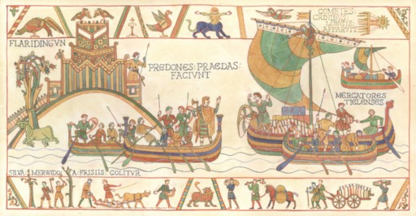
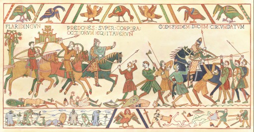
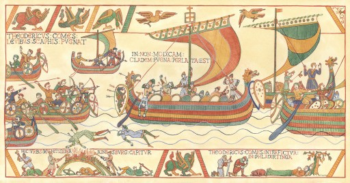
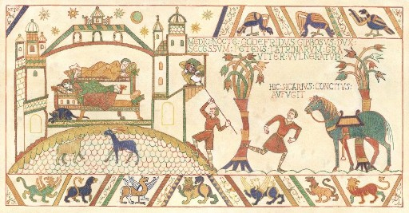
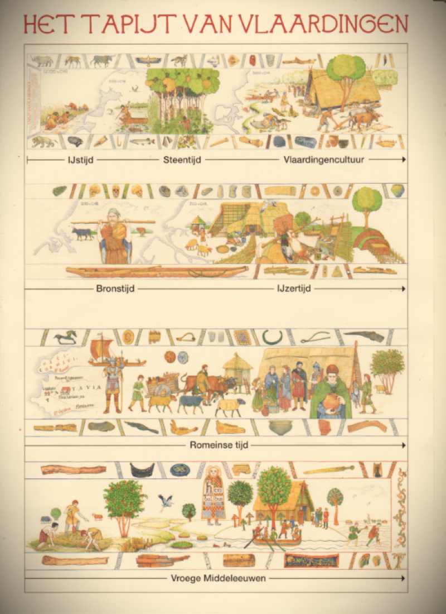

Tapijt van Vlaardingen
Welkom op de website van de Stichting Tapijt van Vlaardingen.
In 2018 was het 1000 jaar geleden dat de Slag bij Vlaardingen plaatsvond. Dat heeft geleid tot veel initiatieven. De archeologische vereniging Helinium kwam met het idee om het Tapijt van Vlaardingen te gaan borduren in de stijl van het Tapijt van Bayeux (Filmpje). Er waren reeds vier panelen aanwezig, gemaakt door illustrator John Rabou. Met deze vier panelen zijn we begonnen. Op deze website vindt u alle informatie van het project. Hebt u vragen? Laat het ons weten! Wilt u op de hoogte blijven van onze activiteiten? Schrijf u in voor onze Nieuwsbrief door het sturen van een mail.
De scènes over de Slag bij Vlaardingen in 1018 zijn klaar. Hier volgen de beschrijvingen van de eerste vier afbeeldingen.
Rovers, Friezen en handelaren: een keizerlijk leger in het Merwedewoud
Op de eerste tekening zien we onderaan hoe 'het Merwedewoud door Friezen wordt ontgonnen'. Dit woud strekte zich uit langs de oevers van de toenmalige Merwede, zoals het riviertracé tussen Woudrichem en Vlaardingen genoemd werd. Het woud was eigendom van verschillende bisschoppen, maar de ontginners droegen de opbrengst af aan Dirk III, graaf van West-Friesland. Die had bij 'Flaridingun' een kleine versterking gebouwd (links). Van daaruit maakte de graaf en zijn manschappen, echte rovers (praedones) volgens de kroniekschrijver Alpertus, het de kooplieden uit Tiel lastig (rechts). Zij beklaagden zich bij Duitse keizer, de toenmalige heerser over het Nederlandse gebied en oom van Dirk III. Ook de bisschoppen die een gedeelte van het Merwedewoud in bezit hadden, vroegen de keizer om in te grijpen. Hij bracht een leger op de been onder leiding van hertog Godfried van Lotharingen. Het leger voer met schepen de rivier af en ging aan land bij Vlaardingen, waar veel Friese ontginners naartoe waren gevlucht. Een komeet met een lange staart (rechtsboven) die in die dagen aan de hemel verscheen, werd gezien als voorteken van groot onheil...
Strijd tussen de sloten: een handvol boeren verslaat een keizerlijk leger
De ridders van het keizerlijke leger konden uitstekend vechten vanaf hun paarden. Maar ze hadden weinig of geen paarden meegenomen in de schepen. Met hun zware maliënkolders en wapens konden ze te voet moeilijk opereren. Bovendien was het land bij Vlaardingen doorsneden door sloten en erg drassig. De opmars verliep dan ook niet voorspoedig. Toen het gerucht ontstond dat hun aanvoerder, hertog Godfried, was gesneuveld, brak er paniek uit in het leger. De troepen vluchtten terug naar de schepen. Op dat moment vielen de lichtbewapende Friezen aan. Een waar bloedbad volgde. Ten slotte vielen de soldaten van graaf Dirk aan. Vanuit de versterking reden zij met hun paarden over de lijken van de gesneuvelden heen (links). Hertog Godfried vluchtte niet samen met zijn manschappen en was omsingeld (rechts). Hij verweerde zich dapper, maar werd uiteindelijk gevangen genomen door Dirks soldaten. De gevangenschap van de hertog was van korte duur. Nadat hij beloofde ervoor te zorgen dat de nabestaanden van de gesneuvelden geen bloedwraak zouden nemen, werd hij vrijgelaten. Graaf Dirk III bleef heer en meester in het gebied.
De strijd gaat door: de burcht van Vlaardingen ingenomen
In september 1047 brandde er een nieuwe strijd los tussen de Duitse keizer en de West-Friese graaf. De keizer was nu Hendrik III (geen familie van Hendrik II) en de graaf in kwestie was Dirk IV, de zoon van Dirk III. De aanleiding voor deze oorlog is onduidelijk en de bronnen spreken elkaar tegen over de uitkomst van de gevechten. In ieder geval trok er weer een keizerlijk leger naar West-Friesland. Volgens één bron veroverde het leger de 'zeer sterke' burchten Vlaardingen en Rijnsburg (linksonder). Een andere bron meldt dat het leger de aftocht blies en dat graaf Dirk IV de achtervolging inzette met kleine schepen (links). Die vielen de achterhoede van de keizerlijke vloot aan en het leger 'leed een niet geringe nederlaag' (midden). Toch trok de keizer uiteindelijk aan het langste eind. In de winter van 1048-49 wordt graaf Dirk IV bij Vlaardingen vermoord (rechtsonder). De opdrachtgevers voor deze moordaanslag waren vermoedelijk de bisschoppen van de omringende bisdommen, de bondgenoten van keizer Hendrik III.
Schandelijke moord te Vlaardingen: het vernederende einde van een hertog
In 1070 verdreef hertog Godfried 'met de Bult' van Lotharingen - achterneef van de hertog Godfried die in 1018 bij Vlaardingen was verslagen – graaf Robrecht ‘de Fries’ uit het West-Friese graafschap. De verdreven graaf zon echter op wraak. Hij bereikte zijn doel enkele jaren later, in 1076. De hertog moest 's nachts naar het toilet, ook wel het gemak genoemd. Dat was toen niet meer dan een deksel met een gat erin. Daaronder had zich een huurmoordenaar opgesteld, die de hertog met een wapen in zijn achterste stak. De hertog was zwaargewond en stierf zeven dagen later. Hij werd begraven in de Lotharingse hoofdstad Verdun. Deze moord vond plaats in Vlaardingen of Antwerpen. De bronnen spreken elkaar tegen. In ieder geval maakte Godfrieds dood de weg vrij voor de herovering van het West-Friese graafschap door graaf Robrecht De Fries en zijn stiefzoon, Dirk V. Zij en hun opvolgers bouwden verder aan het graafschap, dat vanaf 12e eeuw Holland heette. Daarvan zou Vlaardingen nog een eeuw lang één van de belangrijkste plaatsen zijn.
In de randen van de afbeeldingen staan archeologische vondsten uit Vlaardingen en planten en dieren uit die periodes. Zo wordt er door ongeveer 40 dames gewerkt om de geschiedenis van Vlaardingen zichtbaar te maken.
Tot ongeveer 10.000 v. Chr. ligt de huidige Noordzee droog. Er leven grote dieren zoals (van links naar rechts) de wolharige neushoorn, het reuzenhert, de oeros,
de zeearend, de wolf, de kroeskoppelikaan en linksonder de sabeltandkat. De neanderthalers komen in dit gebied jagen op de wolharige mammoet.
Het is de laatste ijstijd en Nederland is een toendra met gras, mossen en kleine struiken. Rond 10.000 v. Chr. begint de aarde op te warmen
. Gletsjers smelten en de Noordzee stroomt vol. Rond 5.000 v. Chr. is de kustlijn zoals afgebeeld. Kort daarna komen de eerste mensen
in onze regio op bezoek. Het zijn rondtrekkende groepen die hier jagen, vissen (steur), voedsel verzamelen en dan weer verder trekken.
De kustlijn verandert sterk.
Ongeveer 3500 v. Chr. worden de jager-verzamelaars boeren. Maar ze blijven ook nog jagen en voedsel verzamelen. Ze gebruiken stenen voorwerpen
als bijlen, pijlpunten,krabbers en mesjes. De vondsten die bij opgravingen rond 1960 aan de Arij Koplaan in Vlaardingen werden gevonden,
gaven archeologen nieuwe inzichten. Daarom worden ze mensen van de Vlaardingencultuur genoemd.
In de rand boven na de pelicaan: steurplaat, een kraal van barnsteen, een krabber, een geweistang en helemaal rechts een berentand. onder
de wenkbrauwboog van een neanderthaler, een bijl van een middenvoetsbeen van een oerrund uit de Noordzee, vishaak, snoek, pijlpunten, wilde appel,
een beitel, geweihamer, krabber, bijl, aardewerk van de Vlaardingencultuur, een graanhalm en de onderkaak van een wild zwijn.
Het skelet van de Krabbeplasman is een van de weinige vondsten uit de bronstijd (2000-800 v. Chr.) in Vlaardingen. Hier staat hij
afgebeeld, terwijl hij zijn koeien weidt. Misschien was hij wel een voorbijganger.Boven hem zijn schedel van drie kanten. De kano is eigenlijk
uit de ijzertijd, maar het is bekend dat er ook in de bronstijd kano's gebruikt werden.
We zien een weefster naast de ijzertijdboerderij en de spieker (opslagplaats). De boerderij is deels opengewerkt, zodat de constructie
zichtbaar is. De gebouwen en het takkenpad zijn in Vlaardingen opgegraven, evenals de wan, een platte, gevlochten mand, waarmee
het kaf van de koren gescheiden werd. De mankomt terug van de jacht en draagt een stok over zijn schouder waaraan zijn buit - een eend en een haas -
vastgebonden is. De vrouw is bezig met een typische maalsteen uit de ijzertijd. We zien daarna een dijkje, het oudste dijkje van Nederland. Gevonden
in het voorjaar van 2021 bij Vijfsluizen.
In de rand boven verschillende vondsten uit Vlaardingen, van links naar rechts: een stenen werktuig, de schedel van de Krabbeplasman, smeltkroesjes om
ijzer/brons mee te maken, aardewerk gebruikt bij de zoutwinning, een kam, een barnstenen kraal en een spinklosje. Onder een kano en de drempel van een boerderij die
gevonden is bij opgravingen bijde Vergulde Hand. Nu ligt die drempel in de deur van de trouwzal van het stadhuis, Daarnaast een weefgewicht
in zij- en vooraanzicht en een duiker.
12 v. Chr. komen de Romeinen ons land binnen. De huidige Oude Rijn wordt de noordelijkste grens van hun rijk. Het kaart
fragment is van de Peuteringerkaart, een kopie van een Romeinse wegenkaart. De opgerolde kaart is een eenvoudig mee te nemen. Op de kaart
zien we Forum Hadrianum (bij Voorburg), ten zuidoosten daarvan ligt Flenio (mogelijk Vlaardingen).
De zeilboot is een typische Romeinse platbodem, die de Rijn op- en afvaart. Mischien hebben ook de Maas en de Waal gevaren (en dus langs
Vlaardingen). De soldaat en het vrachtschip staan symbool voor de Limes en de komst van de Romeinen, ook al zijn ze niet specifiek voor Vlaardingen.
Daarnaast zien we de markt (locatie Hoogstad), een boerderij en een spieker. Met de Romeinen komen er tal van nieuwschierigheden zoals het schrift, munten,kippen en mooi romeins
aardewerk, zoals terra sigillata (aardewerk gemaakt met stempels).
In de rand boven staan een gem (inleg van een ring) van geel glas,een luizenkam, een mantelspeld, stukjes meloenkralen, nog een mantelspeld,
een groene glazen armband, een pincet en een dissel. Onder - naast nog een duiker - een schoenzool, een lanspunt, kaken van respectievelijk
een schaap/geit en een rund, aardewerk, terra sigillata en een boemerang. Deteksjes in de rand zij flarden van een veteranendiploma uit Elst.
Het water van het achterland moet worden afgevoerd naar de rivier. Dat gebeurt met klepduikers: het water kan wel
wegstromen naar de rivier, maar de klep houd het opkomende water tegen om weer terug te stromen. De periode na de Romeinen begint
met ontvolking omdat het gebied weer natter wordt. De bomen zijn gestileerde elzen met katjes en proppen. Er vliegt een blauwe reiger en er
dobberen enkele eenden.
Een groot deel van de voorwerpen in de randen zijn uit de Romeinse tijd, gevonden bij opgravingen bij het Ibishotel/Hoogstad.
Boven een deel van een duiker, een scherf van een beker van geverfde waar uit Trier/Keulen. Onder een ander deelvan de duiker en
hout van een vikingschip. Dat is gebruikt als een deksel van een 11e-eeuwse kuilbegraving, gevonden bij de opgraving Gat
in de Markt in2001/2002. Langzamerhand wordt het land weer bewoond en bewerkt. Rechts zien we boeren aan het werk.
In de achtse eeuw begint de kerstening, die in onze omgeving geleid wordt door Willibrord. Hij wordt later de eerste bisschop van
Utrecht. Er wordt een kerk gesticht. Het zal een eenvoudige houten kerk zijn geweest. Afgebeeld staat Heridaldus. Hij schenkt in 725/726 Een
kerk aan Willibrord. Mogelijk is dat de Vlaardingse kerk.
Boven rechts naast de scherf uit Tier/Keulen een kruis schijffibula, nog een scherf, een houten weef- of oefenzwaard
en een drietand,gebruikt bij het verwerken van wol. Onder een grafkistje van een 8 jarig kind, ook van de opgraving Gat inde Markt.
Links daarvan een grafdeksel gemaakt van hout van een vikingschip en rechts delen van Karolingische weefgewichten. Compleet hebben die een donutachtige vorm. De bomen,
geïnspireerd op miniaturen uit contemporaine handschrift.
Het water is een dreiging voor de bewoners van Vlaardingen.In 1134 en 1163/64 zijn er drie grote overstromingen. Op 21 december1163 verdwijnt Vlaardingen volledig onder water en komt uieindelijk onder een dikke laag rivierslib en klei weer te voorschijn. In de geologie wordt deze kleilaag het Vlaardingerdek genoemd en is voor archeologen een ijkpunt om vondsten te dateren: alles onder de kleilaag is van voor 1164. Door deze ramp raakt Vlaardingen haar belangrijkste positie als grafelijke hoofdstad kwijt. In 1248 is het weer raak; de terp dient als vluchtheuvel. We zien de terp als vluchtheivel voor de overstromingen en de jaartallen van de Sint Thomasvloed (1164) en de overstroming van 1248. De kerk was toen nog in aanbouw. Daarnaast zien we een koggeschip, een destijds veel gebruikt type schip. Daarboven een fragment van een tekst over Vlaardingen uit het boekToneel ofte beschryvinghe der stede van Hollandt van Marcus Zuerius van Boxhorn uit 1634. Deze tekst heeft betrekking op de gebeurtenissen uit de 13de eeuw die hier worden verbeeld.
Met de groei van het aantal inwoners in de middeleeuwen wordt het voor de graaf moeilijker om te bepaalde zaken
regelen: militailre zaken (de verdediging en het leveren van soldaten), financiële zaken (het innen van belasting) en
politieke zaken(bestuur en rechtspraak). Die geeft hij in handen van de diverse nederzettingen en in ruil daarvoor krijgen zij
bepaalde (voor)rechten. Zo ook Vlaardingen in 1273 wanneer graaf Floris V haar stadsrecht verleent.
Welke rechten krijgt Vlaardingen? De belangrijkste zijn:
- vrijdom van verschillende grafelijke belastingen. Dit bevordert de komst van kooplieden naar de stad.
- koopwaar mag tolvrij door heel Holland en Zeeland vervoerd worden.
- Vlaardingen krijgt een eigen rechtelijke macht.
- een poorter zal zijn stadsrecht niet verliezen wanneer hij in het voorjaar om te zaaien en in het najaar om te oogsten enige tijd buiten de stad moet zijn. Welmoet hij aan zijn militaire verplichtingen hebben voldaan en moet hij zijn aandeel in het onderhoud van de dijken leveren.
- Vlaardingen mag een beschermde jaarmarkt houden. Dit trekt handel aan.
De scene van de stadsrechten is losjes gebaseerd op de voorstelling in het glas en loodraam in het stadhuis. Het charter met de stadsrechten van 1273 is niet bewaard gebleven.
Gelukkig weten we wel precies wat erin stond, want de tekst is ons overgeleverd door een vidimus. Een vidimus is Latijn voor 'wij hebben gezien'.
Waarschijnlijk leek dit charter veel op een document dat wèl bewaard is gebleven en dat in de plaat afgebeeld staat achter de ridder (Floris V) die
de stadsrechten symbolisch overhandigt. Dit charter uit 1276 is het oudste in het stadsarchief Vlaardingen bewaarde archiefstuk. Deze akte van Floris V regelt de verlenging
van "alle visserijrechten in de wateren voor de sluizen en in de wateren in heel het ambacht van Vlaardingen, zowel binnen als buiten de oevers", aan
Gerard van der Wareringhe,"onze beminde en getrouwe ridder."
In de bovenrand zien we vlrn: een miskelk, een pateen (gevonden in de kerk),een pincet, een muntbalans en
een bord van esdoornhout.
Onder vlnr: de sacrofaag van Thidbald, hofkapellaan van graaf Dirk VI. Thidbald begon halverwege de twaalfde eeuw metde bouw van de eerste
tufstenen kerk. De sacrofaag is gevonden in 1967 in de Grote kerk en was mogelijk zijn laatste rustplaats. Rechts daarnaast een haarnaald, een Pingsdorfbeker, een kogelpot en een leren schoen.
In deze periode worden de eerste stenen huizen in Vlaardingen gebouwd. Eén daarvan is d'Engelsche Boomgaert, waarvan hier een fantasie afbeelding.
De vorm van het perceel en de grachtis gebaseerd op de opgravingen zoals beschreven in het in het Vlak-verslag 4.1 dÉngelsche Boomgaert van Defilet en Tim de ridder.
Bij deze opgraving in 1998 is een deel van een houten brug gevonden en een paardenkaak, gebruikt als prikslee.
Op het rieten mandje dat daar ook is gevonden, lagen restanten van vis en eierschalen.
Daarnaast de haringbuis (ontstaan in het begin van de 15de eeuw). Deze versie is een weergave van de oudst bekende prent van zo'n schip
uit 1480 en ontleend aan een gravure van goudsmid Willem van den Cruce uit Brugge, die bewaard word in het Rijksmuseum.
In de marge boven van links naar rechts, bijzondere vondsten uit een gracht van Steenhuizen, namelijk een messing ketel en een bronzen grape. Rechts
daarvan een gouden munt, genaamd 2 moutons, naar het schaap dat op de schaap dat op de beeldzijde is afgebeeld: gevonden in 1990 in een kuil
puin van een afgebrand huis aan de Hoogstraat. Onder een hertje van brons, waarschijnlijk een jandelaar of blaker, fragmeneten van een spitoplegger en een dolk (begin 15de eeuw).
Hier zijn we nu bezig ►
In 1573/4 is Vlaardingen het toneel van de strijd van Willem van Oranje tegen de Spanjaarden in de Tachtigjarige oorlog. Op bevel van
Willem van Oranje wordt Vlaardingen platgebrand om de stad niet heelhuids in Spaanse handen te laten vallen. Voor de stadsbrand is er gebruik gemaakt van de kaart van Jacob van Deventer uit ± 1560 uitde Historische Atlas Vlaardingen.
Deze kaart geeft nauwkeurig de situatie weer van voor de grote brand van 1574. Toch is het stadsaanzicht fictief en slechts een impressie van hoe het geweestzou kunnen zijn.
Zo staan op de kaartvan Van Deventer op de oosterlijke oever van de Vlaarding 2 gebouwtjes ingetekend. Deze boerderijen zijn geïnterperteerd als zijnde boerderijen.
Maar het is niet zeker of dit ik zo was. We kijken in westelijke richting naar de stad vanuit het oosten. Links de oever van de Merwede met het galgenveld
en iets meer naar het noorden de Grote Kerk en helemaal noordelijk op de kop van de Kortedijk de korenmolen.
Voor de scènes op de voorgrond heeft men zich laten inspireren door een aantal contemporaine tekeningen van Pieter Breugel de Oudere uit ± 1555-1560.
De artefecten komen van de site geschiedenisvanvlaardingen.nl en vertellen allemaal(min of meer) een verhaaldat te maken heeft
met de stadsbrand. Zo komen de munten uit een muntsschat van (oorspronklijk) 93 zilveren munten uit de 15de en 16de eeuw, die waarschijnlijk begraven is tijdens de grote brand. Ui de Collectie Archeologie Vlaardingen.
Links een benen fluitje uit het Zwarte Paard op de Korte Dijk. De hoornpit zegt iets over het ambacht van de leerbewerking. Er is een pelgrimsinsigne, een mantelhaak
en diverse aardewerken serviesgoed. Het pijpaarden terracotta vrouwenkopje komt uit midde 15de-
begin 16de eeuw.